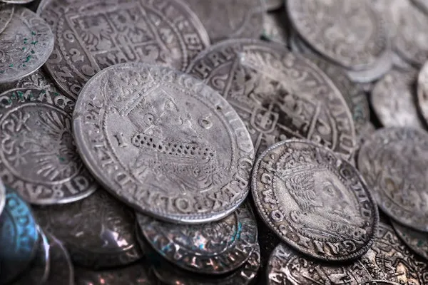
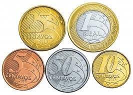

A numismática começou como uma atividade de colecionismo, com raízes na Antiguidade...
Moeda do período romano, exemplo das primeiras coleções.
No Renascimento, o interesse por moedas ganhou força...

Exemplo de moedas colecionadas no Renascimento.
Hoje, a numismática é reconhecida como uma ciência...

Coleção moderna de moedas brasileiras.